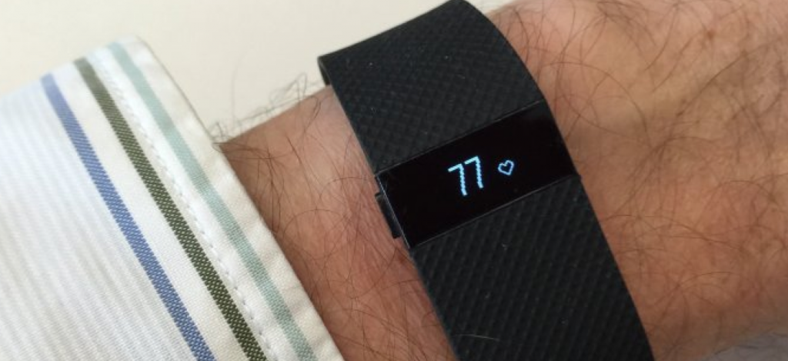

Wer sich in der Freizeit gerne dem Sport widmet, der wird dies vielleicht tun, weil er seine Figur erhalten möchte und weil er mit der sportlichen Betätigung die körperliche Fettverbrennung verbessern will. Hierfür muss der optimale Puls erreicht werden, denn ist der Puls zu hoch oder zu niedrig, dann kann eine optimale Fettverbrennung nicht erfolgen. So kann die moderne Technik die sinnvolle Unterstützung sein, dass man sein Ziel mit Sport erreichen wird. Mit einem Fitness Tracker kann der Sportfan alle vitalen Werte des Körpers stetig ermitteln und wer sich Fitness Armbänder kauft, der wird bei der Steigerung der sportlichen Leistung und bei der Ermittlung der perfekten Fettverbrennung immer sein Ziel erreichen.
Fitness Armbänder und Tracker – die sinnvollen Helfer in der sportlichen Freizeit
Der moderne Fitness Tracker (Spiegel Online) kann als eine Hochleistungstechnik am Arm getragen werden und der Sportfan kann viele praktische Funktionen nutzen. Für die Diät kann jetzt der Kalorienverbrauch besonders wichtig sein und wer seine Leistung in Schritten wissen will, der kann sich über einen Schrittzähler freuen. Neben der normalen Uhrzeit kann der Sportler noch eine Schlafanalyse machen, eine Distanz messen oder die Herzfrequenz, aber genauso kann ein Vibrationsalarm genutzt werden. Selbst eine Höhenmessung wird der Nutzer nicht vermissen und damit keine zu großen Pausen entstehen, gibt es beim Aktivitätstracker auch eine wichtige Inaktivitätswarnung. Mit einem Aktivitätstracker kann der Nutzer heute sogar die eigenen Blutwerte überwachen und auch die Körpertemperaturen wird stetig kontrolliert. So überzeugen innovative Aktivitätstracker mit so vielen Funktionen, dass selbst kranke Menschen mit ständiger Überprüfung der Vitalwerte sich voll und ganz im Rahmen ihrer Möglichkeiten dem Sport widmen können.
Mehr dazu auf der Website www.myfitnesstracker.de wo einige Tracker getestet wurden.
Der moderne Fitness Tracker – heute ist eine App auf dem Smartphone beliebt
Wer sich die Preise guter Fitness Armbänder anschaut, der glaubt, dass er mit einer Fitness App für sein Smartphone eine günstige und bessere Wahl getroffen hat. Ob iPhone oder Android, der Sportler kann mit seiner App auf dem Smartphone seine persönlichen sportlichen Leistungen nicht nur aufzeichnen, er kann sie auch analysieren. Ob Wandern, Joggen oder Fahrrad, mit der App auf dem Smartphone kann der Nutzer sogar das beste Trainingsprogramm für sich zusammenstellen. Den modernen Aktivitätstracker kann der Fitness Fan aber als Armband tragen und so muss nicht stetig das Smartphone aus der Hosentasche geholt werden, damit man die App nutzen wird. Es genügt der Blick auf das Handgelenk, was sich beim Laufen oder Radfahren leichter machen lässt.
Das Fitness Armband zeigt im Test überzeugende Leistungen
Mit so manchem Test kann bewiesen werden, wie nützlich ein Tracker für den Anfänger und den Sportprofi sein kann, denn die Kontrolle aller möglichen Vitalfunktionen wird dazu beitragen, dass immer die optimale Höchstleistung erreicht werden wird. Der Kunde kann sich aus einer Vielzahl von Aktivitätstracker bedienen und hierbei sollte immer darauf geachtet werden, ob die vorhandenen Funktionen wirklich genutzt werden müssen. Trägt man Armbänder, dann kann die sportliche Leistung gesteigert werden und wer hier auf die Produkte bekannter Markenhersteller wie Jawbone, Fitbit oder Garmin setzt, der kann sich bald über sportliche Fitness freuen, die mit keinerlei körperlichen Schäden verbunden sein muss.
Jawbone
Geht es um einen Test nützlicher Aktivitätstracker, dann wird man immer wieder auf gute Produkte der Marke Jawbone finden. Als führender Hersteller innovativer Consumertechnologie kann sich der Käufer darauf verlassen, dass er im Test die besten Produkte dieser Firma erwerben kann. So ist der UP 2 bei den Sportlern sehr beliebt, denn mit seinen vielen innovativen Funktionen hat der Nutzer immer die Kontrolle über alle seine Vitalfunktionen. Soll die Ernährung stets überprüft werden, die Schlafgewohnheiten analysiert werden oder die Bewegungen des Menschen kontrolliert werden, mit einem Tracker von Jawbone ist der Sportfan bestens gerüstet. Mit mehr als 600 Patenten kann der Käufer sich sicher sein, dass er immer wieder ein Stück Technik kauft, dass auf dem höchsten Stand der technischen Entwicklung sein wird. Dies alles wird von der Firmenzentrale in San Francisco kontrolliert, damit zufriedenen Kunden in mehr als 40 Ländern beim Sport immer wieder modernste Armbänder tragen wird.
Jawbone UP
Mit dem UP kann sich der Nutzer über ein innovatives Armband freuen, aber genauso hat schon so mancher Test bewiesen, dass auch die App fürs Smartphone beste Technik für den Nutzer bringt. Und in der Kombination von Armband und App fürs Smartphone wird der Kunde erleben, dass er alle Vitalwerte nicht nur beim Sport, sondern auch im normalen Leben stets unter Kontrolle haben kann.
Jawbone UP2
Wer von einem Armband stylisches Design erwartet und dazu noch beste Technologie für einen fitten Alltag, der wird vom UP2 nicht enttäuscht werden. Aktivitätspläne oder Fitnesstipps vom Smart Coach, dieses Armband beinhaltet Sporttechnologie, die auch beim Test nur gute Noten erzielen konnte.
Jawbone UP3
Der UP3 ist ein Blick in eine technologische Zukunft bei der Kontrolle aller Vitalwerte. Hier kann sich der Mensch stets auf modernste Technik verlassen und hier soll der Nutzer mit seinem Armband eine lebensverändernde Erfahrung machen. Mehr Fortschritt in der Technik kann sich der sportliche Mensch nicht wünschen und tragen, wobei die Multisensor-Technologie nur ein kleiner Beitrag für eine Optimierungen der eigenen Gewohnheiten im Alltag und im Sport sein wird.
Jawbone UP move
Die Jawbone Up move, dass heißt mehr Fitness und mehr Bewegung für den Nutzer. Hier hat der Nutzer rund um die Uhr einen Motivator bei sich und immer wieder kann der Sportler neue Hürden im Leben überspringen. Das bessere Ich soll hier das Ziel sein, so dass man gerne den Smart Coach, die Essenprotokollierung, die Schlafaufzeichnung und die Aktivitätskontrolle nutzt.
Fitbit
Im Tracker Armbänder Test können auch die Produkte von Fitbit überzeugen, denn die Produkte dieses Unternehmen sollen zu mehr Fitness und einer besseren Gesundheit führen. Ein glückliches Leben wünschen sich die Gründer der Firma James und Eric seit 2007 für ihre Kunden und hier sollen die Tracker von Fitbit besonders hilfreich sein. Die farbenfrohen Aktivitätstracker von Fitbit sollen dazu beitragen, dass der Nutzer seine Ziele in der Fitness und bei der Gesundheit erreichen kann und so haben die Macher von Fitbit Produkte konzipiert, die sich ohne Mühe in den Alltag integrieren lassen. Der Erfolg kann sich im Test sehen lassen, denn die Benutzer der Fitbit Armbänder sind so motiviert, dass sie 43 Prozent mehr Schritte gehen im Alltag. Mehr Energie fürs Leben, dass wünschen sich die Macher für ihre Kunden und so bietet Fitbit immer neue und innovative Produkte an.
Fitbit Flex
Einfach mal ein schickes Armband im hellen Grün tragen, dann kann der Nutzer sich über Funktionen freuen, sodass er gegangene Schritte, die zurückgelegte Strecke, verbrannte Kalorien, aktive Minuten, geschlafene Stunden und die Schlafqualität stets kontrollieren wird.
Fitbit Charge
Ein kleines technisches Wunderwerk als Armband kann der Käufer tragen, wenn er das Charge nutzt. Hier hat er sogar einen wasserdichten Aktivitätstracker und die Armbänder können auch als schönes Accessoire begeistern. Zeichnet Lebensmittel auf oder das persönliche Training, diese Armbänder können überzeugen, denn sie gestatten dem Nutzer durch stete Kontrolle zu erfahren, wie er sein Leben effektiv fitter und gesünder leben kann.
Fitbit Charge HR
Ob Herzfrequenz, Strecke, Etagen, Schritte oder verbrannte Kalorien und Trainingseinheiten, jeder Test wird zeigen, dass dies ein wirklich nützlicher Begleiter im Alltag sein kann. Mit Herz trainieren soll der Nutzer und der Wunsch nach einem gesunden und fitten Leben soll sich möglich schnell erfüllt werden. Mit einem alltagstauglichen Armband kann der Nutzer schnell lernen, welche Angewohnheiten er im Leben ändern muss und wie er seine Sportaktivitäten optimieren sollte.
Fitbit Surge
Ein Aktivitätstracker wie dieser ist mit innovativer Technologie gefüllt worden, damit der Käufer sich auf viele tolle Funktionen freuen kann. Das Surge Armband verfügt sogar über ein GPS Tracking, die Pure Pulse Herzfrequenz oder es werden die Aktivitäten eines ganzen Tages aufgezeichnet. Selbst bei einem Test der Betriebsdauer kann das Gerät mit sieben Tagen und länger überzeugen.
Garmin
Mit 10000 Mitarbeitern an 35 Standorten in aller Welt bietet Garmin geballte Power für die Kunden auf, damit in den Bereichen Sport, Outdoor, Marine und Luftfahrt immer die besten Produkte im Alltag nutzen können. Mit Beständigkeit in den Produktleistungen und einem tollen Preis-Leistungs-Verhältnis sowie bester Qualität strebt Garmin die Führung auf den Märkten an. Der Kunde soll sich aber genauso über die Benutzerfreundlichkeit der Produkt freuen, die immer wieder mit einem brillanten Design angeboten werden.
Garmin VivoFit
Neue Tagesziele erreichen, mit diesem Fitnessband kann sich der Nutzer auf eine fitte und gesunde Zukunft freuen. Wasserdicht, messen der Herzfrequenz und Planen der Fortschritte bei der Fitness, moderne Technik von Garmin will dem Menschen bei der Gestaltung seiner Lebensplanung helfen und dabei immer auf sportliche Aktivitäten hinzielen.
Garmin VivoFit 2
Mit diesem Armband für die Fitness kann der Nutzer sich zum Beispiel eine Schlafanalyse erstellen oder er wird mit einem akustischen Alarm daran erinnert, dass er immer aktiv bleiben soll. Neue Tagesziele, der Kalorienverbrauch oder die Distanz, alles was dem Menschen helfen wird, dass er aktiv und gesund ist, werden diese Armbänder dem Nutzer anzeigen.
Garmin Vivosmart
Dieser Aktivitätstracker von Garmin kann sogar vom Smartphone Emails und SMS erhalten. Das Display ist so innovativ, dass der Nutzer hier mit kinderleichter Bedienung auf dem Display Streichen oder Tippen kann. Vibrationsalarm, Inaktivitätsalarm oder automatische Ziele, mit den innovativen Funktionen kann dieses Tracker Armband jeden Test gewinnen.
Garmin Vivoactive
Innovative Technik für eine gesunde Zukunft, mit dieser Sport GPS-Smartwatch haben die modernsten Technologien in den Alltag von Sportfans ihren Platz gefunden. Sportapps, GPS, eine Kopplung mit dem eigenen Smartphone, dieser Aktivitätstracker kann einen sportarmen Alltag wieder in ein aktives Leben verändern und dazu noch viele andere nützliche Funktionen bieten.
Sportarmbänder – ein Fazit
Ob man sich für eine App auf dem Smartphone oder für ein Sportarmband entscheidet, allein schon der Entschluss sich mehr um ein fittes und gesundes Leben zu bemühen, kann der erste Schritt in eine bessere Zukunft sein. Gerade Menschen mit körperlichen Beschwerden sollten auf die Kontrolle ihrer Vitalwerte nicht verzichten, egal ob Smartphone App oder eins der neuesten Sportarmbänder. Und besieht man sich die Fitness App oder den Tracker in so manchem Test im Internet, dann sind es immer wieder tolle Erfolge, die mit der Nutzung eines Tracker einhergehen. Hersteller wie Jawbone, Fitbit oder Garmin wollen dabei helfen, dass der Kunde innovative Armbänder für sein Leben nutzen kann.